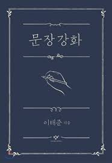

문장강화
책 구매처
문장작법의 새 의의
문장작법이란?
과거의 문장작법
새로운 문장작법
문장과 언어의 제 문제
운문과 산문
문장작법의 새 의의
1.문장작법이란?
문장이란 언어의 기록이다. 언어를 문자로 표현한 것이다.
언어,즉 말을 빼놓고는 글을 쓸 수 없다.
문자가 그림으로 바뀌지 않는 한, 발음할 수 있는 문자인 한,
문자는 언어의 기록임을 벗어나지 못할 것이다.
